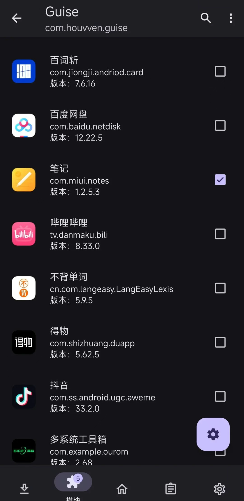
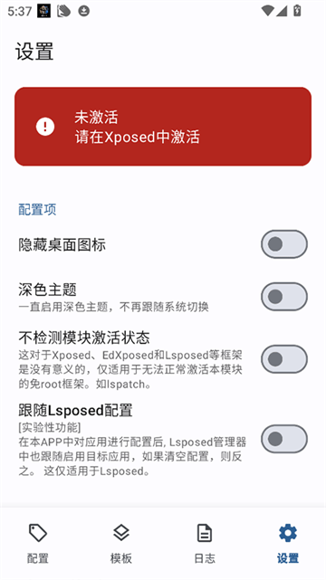

Guise 用过之后才懂的几个坑——我重装了两次才踩明白
Guise 作为一款 Xposed Hook 模块，看着就是装个 APK 点几下的事。实际用下来踩了好几个想象不到的坑，从框架激活到 Hook 链路验证，每一个都够让新手摸不着头脑。整理一下我踩过的几个典型。
我第一次装Guise官网上发布的那个版本的时候，以为就是装个 APK 然后在 LSPosed 里勾一下目标应用，完事能跑。结果断断续续重装了两次才把它弄明白——这东西的坑比想象中多，而且很多坑不会直接报错，它就是安安静静地不生效，你以为配置了半天白忙活。这篇就把我踩过的几个典型摊开说，照着走一遍能省你至少一两天的折腾。
第一个坑：Xposed service 显示连接失败，但 Guise 本身能打开
症状是 Guise 管理端一切正常，应用列表能读，配置能改，唯独状态栏那一排小字永远在说连接失败。我第一次见到这个以为是网络问题，反复开飞行模式、重启手机、重新装 Guise APK，全没用。折腾了半个小时才反应过来——根本不是 Guise 的事，是 LSPosed 框架本身没激活。
为什么会这样：Guise 是 Xposed 模块，它自己不负责注入，注入全靠 LSPosed 框架。如果框架状态是"未激活"，Guise APK 照常能装能开界面，但 Hook 代码根本不会被注入到任何目标应用。它显示的 Xposed service 连接失败，说白了就是在告诉你"框架那边没响应"。我第一次以为是自己的 Guise 版本不对，还特意跑去官方下载页找对应 Android 版本的包，白费功夫。
解法很直接：打开 LSPosed 管理器，先看框架状态是不是"已激活"。如果没激活，排查方向就两个——Zygisk 开了没、框架模块有没有被禁用。Magisk 用户要在 Magisk 设置里确认 Zygisk 开关是开的，然后去 LSPosed 里看模块列表，确认 Guise 的勾选框真的打上了勾。这些都到位了，重启手机，连接失败那行字会自动消失。这个坑我后来给朋友装机也见过两次，全是同一原因，属于新手高频翻车点。

第二个坑：GPS 伪装开了，应用定位结果就是不对
这个坑我踩得最久。配置了一套固定坐标，选了个上海的经纬度，打开地图 APP 一看定位还是我家。我以为是坐标格式问题，改了格式再试；以为是随机偏移开了，关了再试；甚至以为是应用不在 Hook 列表里，反复确认勾选。折腾了大概一个小时才发现——我忽略了一个基本事实：Guise 伪装不了 IP 定位。
症状就是：Hook 配置都对，LSPosed 也激活了，目标应用也在列表里，但定位就是对不上。我当时还去翻 Guise 的日志，ERROR 级别一条没有，INFO 全是 Hook 加载成功。这说明客户端这边全对，问题不在 Guise。
为什么会这样：Guise 的定位伪装走的是客户端 Hook——拦截应用通过 Android Location API 读取的 GPS、网络、融合坐标。但很多应用除了读 Android 系统的坐标，还会发请求到自己的服务器端，服务器拿到请求来源 IP 直接反查位置。这条链路完全绕开了客户端 Hook，服务器端我又控制不了。我当时用的那个地图 APP 显然就是这样干的，Guise 把 Android API 返回值改了，但应用转头就用服务器返回的位置覆盖了。
解法分两种情况。如果目标应用只用 Android 系统定位 API，那 Guise 的伪装就能生效。但如果应用有服务器端定位（现在大部分主流 APP 都有），客户端 Hook 管不了服务器那边。这种情况下要么配合 VPN 或代理用，要么换一个只依赖系统定位的目标 APP 来测试。另外还有个细节——厂商私有位置接口（比如小米、华为的私有 Location 扩展）也绕得开通用 Hook，在这些 ROM 上要特别留意。
第三个坑：改完配置不知道生效了没，瞎猜
这个坑说穿了不是技术问题，是使用习惯的问题。我前几次用 Guise 改配置，都是直接打开真实目标应用看效果——设备 ID 变没变、应用说我是什么手机、定位对不对。结果每次改完配置后，要么是应用还显示旧值，要么是某个通道跟预期不一致，我得反复改反复重启，完全凭感觉判断问题出在哪。
Guise 有个专门的靶应用叫 Guise Test，跟 Guise Reborn 同仓库发布，但我第一次用的时候完全没注意到它。这个靶应用的核心能力是三源交叉哈希——同一批设备事实，分别从 Java API、系统属性、内核三个通道各读一遍，各自哈希。哪个哈希跟你配置的对不上，它直接告诉你是 Build、属性层、GPU 还是内核层出了问题。第一次跑的时候看到它列出"不一致 0 项"那一刻，我才明白之前瞎折腾了多久。
正确的做法是：每次改完配置，先用 Guise Test 测一遍再去用真实应用。测完的理想结果是所有通道一致、痕迹暴露为零。如果有通道跟不上，Guise Test 会精确指出是哪条 Hook 没注入成功，你只需要针对那一条排查，不用全链路重来。物理事实那几项（内核 SoC、内存、ABI）它会正常标注为"无法修改"，这时候也别硬改，那根本不是 Guise 管的范围。

第四个坑：为了排障把 DEBUG 日志打开，反而留了更多痕迹
这个坑我踩得最冤枉。为了排查前面那个 Hook 链路的问题，我打开了 Guise 管理端的 DEBUG 级别日志，想着看看 Hook 配置的明细。结果日志确实打出来了，但排查完之后我忘了关。过了两三天去 Guise Test 里一看，痕迹暴露多了好几项。
为什么会这样：Guise 的 DEBUG 日志默认关闭不是没道理的。关闭状态下，目标进程只在有事件时才批量投递日志到管理端，不查询目标应用 Context、不排队重试、不发广播——不为了日志功能留下多余的生命周期 Hook。但一旦打开 DEBUG，它就会额外做这些事，每个多余的 Hook 都可能被有反 Hook 检测的应用抓到。
而且日志本身也会记录 Hook 的配置明细和完整异常堆栈，这些信息在 DEBUG 级别下全量打印。排查的时候看一眼确实方便，但排完不关，等于给自己开了个后门。关于日志的投递机制和隐私边界，Guise文档里写得很清楚。目标进程只保留每进程最近 12 条待投递记录，不无限增长，管理端去重后最多存 2000 条——但这仍然是排完障必须关掉的东西。
解法也很简单：ERROR 和 INFO 级别一直开着就行，这两个是排障兜底用的，默认就开。只有当你确认需要深入排查某个 Hook 配置细节的时候，临时打开 DEBUG，查完立刻关。日志里也有隐私边界的——它不会记录应用内容、账号密码、位置网络数据、系统全量 Logcat，所以正常打开 ERROR 和 INFO 没问题。
防坑清单
- 装 Guise 之前先确认 LSPosed 框架状态是已激活，别等连接失败报错了才回头查框架，浪费半小时
- 定位伪装不等于 IP 伪装，遇到定位不对先想是不是应用有服务器端定位，不要反复改坐标
- 每次改配置后先用 Guise Test 跑三源交叉哈希验收，再去用真实应用，省得全链路瞎猜
- DEBUG 日志默认关是有原因的，排完障务必关掉，别给自己留多余 Hook 痕迹
- 厂商 ROM（小米、华为）的私有位置接口可能绕开通用 Hook，排查时别漏了这条
知道这些坑之后，这软件其实相当省心。它的 Hook 覆盖范围、日志链路的设计、三源交叉哈希的靶应用思路，在同类工具里都算做得很扎实的。整套开源代码我在三个仓库都做了完整归档方便随时查阅——GitHub、Gitee、GitCode。前提是你得先把这些坑踩明白，不然光看文档上的配置项一个一个点，不知道哪个环节在悄悄给你拖后腿。